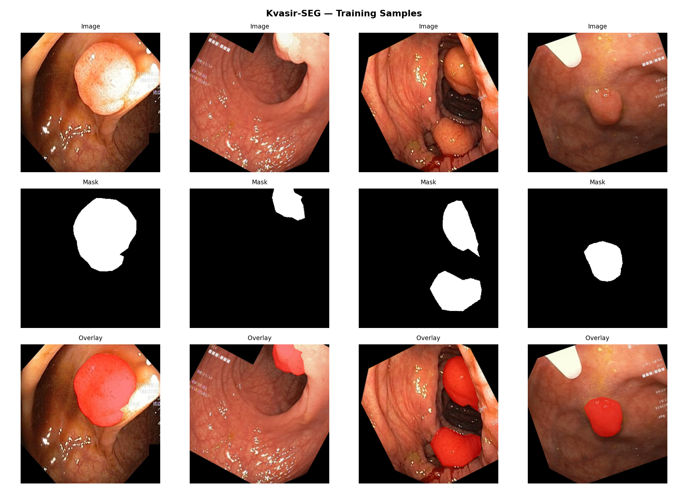
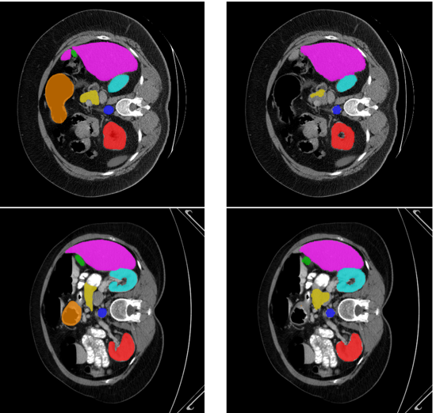
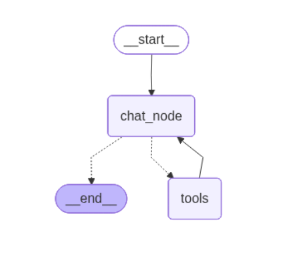

Python
Experienced
Computer Vision Researcher
Computer Vision · Medical Imaging · Deep Learning
Researching hybrid CNN-Transformer architectures and diffusion-based self-supervised learning for medical image segmentation, with a focus on multi-organ abdominal CT analysis.


Get To Know More

3+ years
ML & Computer Vision Research

B.Sc. in Electrical & Electronic Engineering (EEE)
I am a machine learning researcher specializing in computer vision and medical image analysis. My current research focuses on designing novel deep learning architectures particularly hybrid CNN-Transformer models and diffusion-based self-supervised frameworks for precise segmentation of anatomical structures in clinical imaging. I am passionate about bridging the gap between cutting-edge research and real-world medical applications, translating complex model designs into deployable, high-performance systems.
Technical
Experienced
Experienced
Experienced
Experienced
Experienced
Intermediate
Experienced
Experienced
Experienced
Experienced
Experienced
Intermediate
Intermediate
Intermediate
Experienced
Experienced
Experienced
Experienced
Intermediate
Experienced
Intermediate
Experienced
Experienced
Intermediate
Ongoing Work
Advancing deep learning methods for medical image understanding
A tri-hybrid CNN–Mamba–Transformer architecture built on a PVT v2-B2 encoder, combining a parameter-free Wavelet Edge Attention Gate (WaveletEAG), a bidirectional Cross-Scale Mamba Module (CSMM) for linear-complexity global context, and a dual-branch (local window + global) Transformer decoder — achieving state-of-the-art results on 3 of 4 independently trained colonoscopy polyp benchmarks.
A novel multi-scale hybrid fusion architecture that combines convolutional and transformer-based feature extraction pathways to achieve precise segmentation of multiple abdominal organs in CT scans. The network leverages multi-scale feature fusion to capture both fine-grained local structures and long-range anatomical context simultaneously.
Exploring the integration of diffusion probabilistic models within a semi-supervised learning framework to improve segmentation performance under limited annotation regimes. The approach leverages the generative power of diffusion models to learn rich, transferable visual representations without requiring dense pixel-level labels during pre-training.
Browse My Recent

Tri-hybrid CNN–Mamba–Transformer architecture with wavelet-based edge attention, achieving SOTA results on 3 of 4 colonoscopy polyp benchmarks at a compact 25.4M-parameter footprint

Novel multi-scale hybrid fusion architecture combining CNN and Transformer pathways for precise simultaneous segmentation of abdominal organs in CT scans
Novel hybrid CNN architecture combining multiple CNN models for enhanced feature extraction and accuracy

Multi-tool conversational AI with advanced agent capabilities using LangGraph and LangChain
Deep learning model for automated wheat head detection and analysis using advanced computer vision techniques
CNN-based system for identifying and classifying diseases in cassava plants using image recognition
Thoughts & Notes
Research notes, paper summaries, and insights from my work in ML and medical imaging
A deep dive into how classical attention mechanisms from squeeze-and-excitation to channel attention are transforming the way deep learning models understand and segment medical images with greater precision.
Building on classical attention, this part explores how Vision Transformers and cross-attention designs push segmentation performance further and why combining them with CNNs is becoming the new standard.
A comprehensive walkthrough of convolutional neural network architectures from AlexNet to EfficientNet examining how each design choice impacts feature extraction, depth, and performance on visual tasks.
Get in Touch
Open to research collaborations, discussions, and opportunities